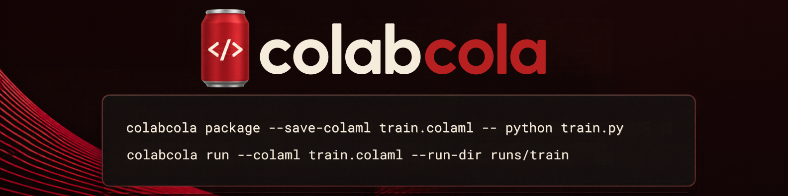

From local Python scripts to managed Colab runs.
Package Python code and inputs, run workloads on Google Colab, and recover logs, checkpoints, and verified results using a local CLI.
What Colab Cola does
An independent open-source project focused on making script-driven Colab workloads easier to prepare and recover—without turning your project into a manually operated notebook.
Package
Bundle Python entry points, dependencies, and inputs into reproducible job specifications.
Run
Launch and monitor managed executions using a Google account and a configured Cloud project.
Recover
Use durable journals, checkpoints, and Drive-hosted artifacts to reconnect to work and retrieve results.
Install and get started
v0.1.0 release in preparation The package is undergoing final release checks; the command below is the planned installation experience.
$ python -m pip install colabcola $ colabcola login $ colabcola package --save-colaml train.colaml -- python train.py $ colabcola run --colaml train.colaml --run-dir runs/train
For detailed setup, prerequisites, and CLI examples, see the documentation. The initial release is being prepared; do not assume the package is available on PyPI yet.
Your Google account, your project, your data
Colab Cola authorizes Google services through your browser. Its production desktop OAuth client requests access to files you use with the application, not unrestricted access to your Drive. Cloud project selection and execution remain associated with your account.
Read the privacy policy for details on permissions, local credentials, and Google Drive storage.